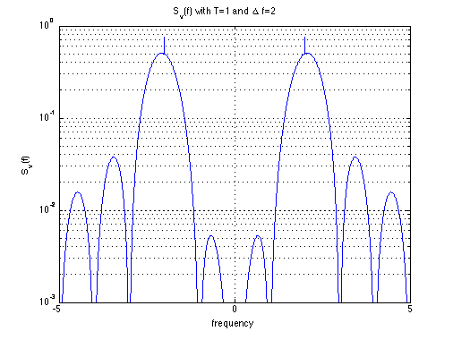

Spectrum Analysis of CPM
Copyright 2007 Telecommunications Lab
f=[-40:.001:40]; T=1; Delta_f=2; SV_1= 1/(2*T)*(sinc((f+Delta_f)*T)+sinc((f-Delta_f)*T)).^2; SV_2=(1/4)*(dirac_(.0000005,f-Delta_f)+dirac_(.0000005,f+Delta_f)); SV=SV_1+SV_2; %figure; %plot(f,SV_1);hold on;plot(f,SV_2);xlabel('frequency');ylabel('S_v(f)') subplot(1,1,1); semilogy(f, SV, 'b', 'LineWidth',1.5); title('S_v(f) with T=1 and \Delta f=2') xlabel('frequency') axis([-5 5 0.001 1]) ylabel('S_v(f)') grid on;